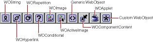
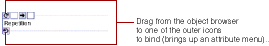

PATH
Documentation > WebObjects 4.5 >
Tools and Techniques
Creating Other WebObjects

You use this toolbar to create all dynamic elements other than form-based elements. This section provides some general information about using these elements. Each element is described in more detail in its own section.
To create a dynamic element, you click its toolbar icon. One thing to be aware of is what happens when there are already elements selected when you create the element:
-
Some dynamic elements (WOHyperlink, WOConditional, WORepetition, custom WebObjects and generic WebObjects) can contain other elements. In this case, the selected elements appear with the new element "wrapped" around it.
-
Other dynamic elements (WOString, WOImage, WOActiveImage, and WOApplet) can't contain other elements. When you create one, it replaces whatever was selected.
The dynamic element types in the toolbar except for WOImage, WOActiveImage, and WOApplet display with a pair of icons surrounding the element (and possibly other icons in between). For example, when you create a repetition, it appears like this in the component window:

To bind a dynamic element, you drag from an item in the object browser to one of the outer icons. The attribute menu appears, allowing you to complete the binding. See
Binding Elements
for more information.
© 1999 Apple Computer, Inc. – (Last Updated July 27 99)